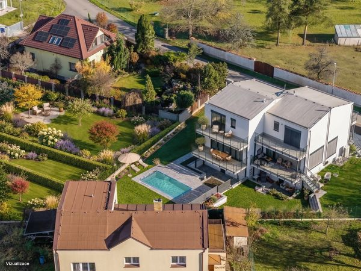
VizualizaceHotovo 0 úkolů · Odsouhlaseno 0 z 40
Vyhlídky Suchdol · dům B · FrantišekDron × Eva Goldšmíd, RE/MAX
Dům B · Vaše úkoly ke schválení
Dobrý den, pane Sládku, Vaše připomínky jsme zapracovali. Teď prosíme už jen o schválení fotek do inzerátu a 3D modelu a o odeslání cen nadstandardů, které jste doplnil. Jakmile je schválíte, začneme dělat video. Na konci klikněte na Odeslat.
Úkol 1
Fotky do inzerátu
Co udělat: U každé fotky klikněte Souhlasí, nebo Upravit.
Proč: Fotky půjdou do inzerátu a na web.
Těchto 30 fotek dáme do inzerátu a na web. Fotky označené „Vizualizace“ jsou návrh zařízení. Klepnutím fotku zvětšíte.
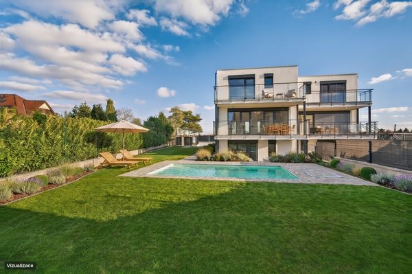
Vizualizace2. Zahrada s bazénem
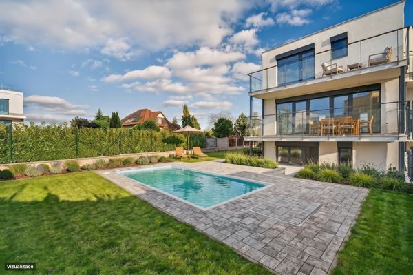
Vizualizace3. Bazén a terasy
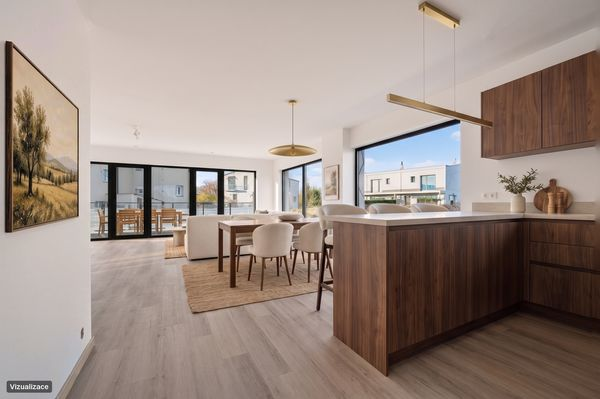
Vizualizace4. Obývací prostor s kuchyní
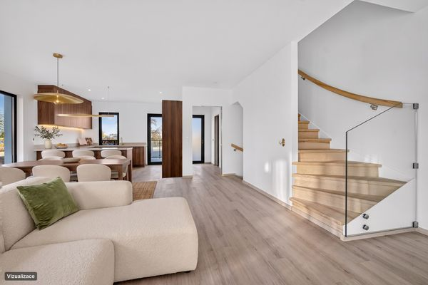
Vizualizace5. Obývací prostor ke schodišti
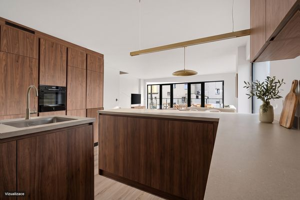
Vizualizace6. Jídelna a obývací část
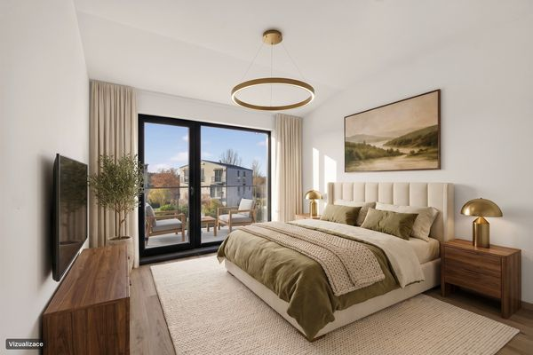
Vizualizace7. Ložnice
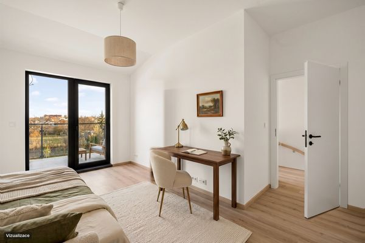
Vizualizace8. Pokoj
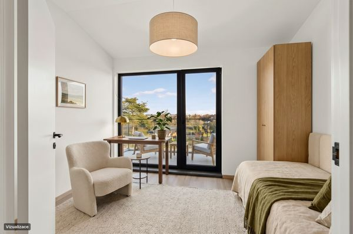
Vizualizace9. Pokoj s výhledem
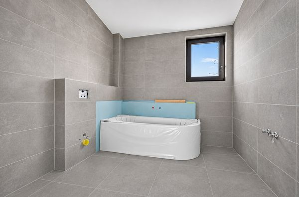
10. Koupelna s vanou
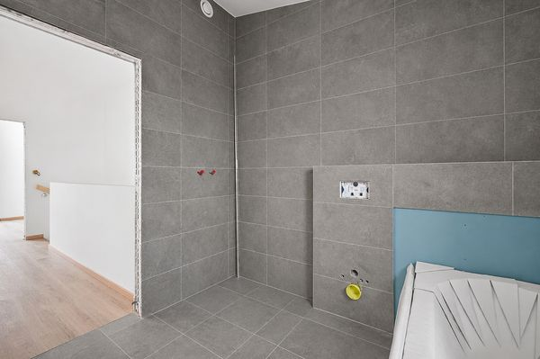
11. Koupelna
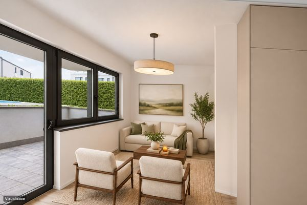
Vizualizace12. Garsonka u terasy (1.PP)
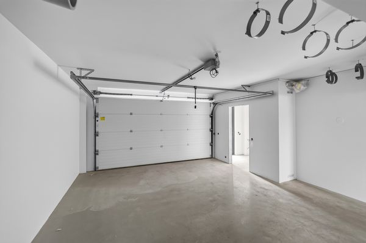
13. Garáž s pohonem vrat
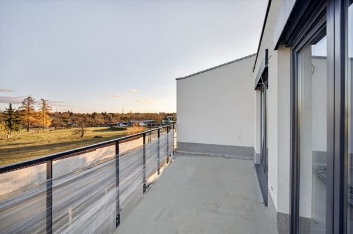
14. Balkon s výhledem do krajiny
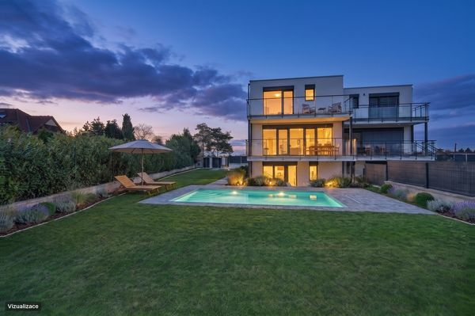
Vizualizace15. Zahrada s bazénem večer
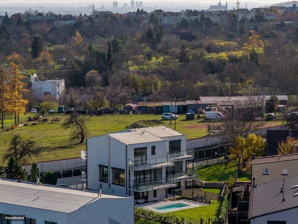
Vizualizace16. Dům a Praha v dálce z dronu
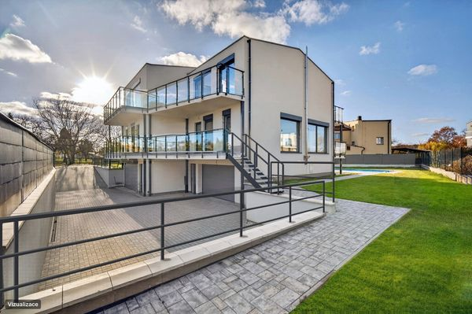
Vizualizace17. Dům od vjezdu
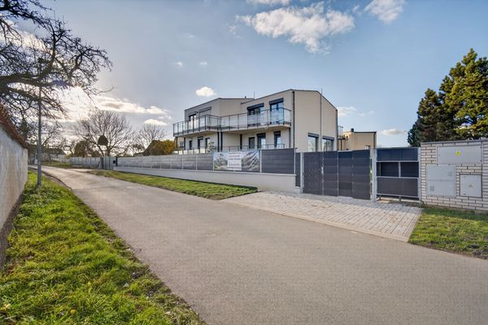
18. Dům od ulice
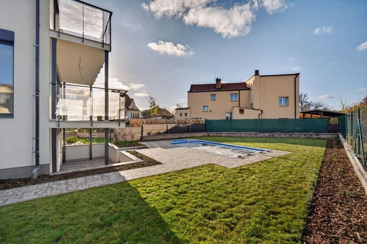
19. Severní strana se zahradou
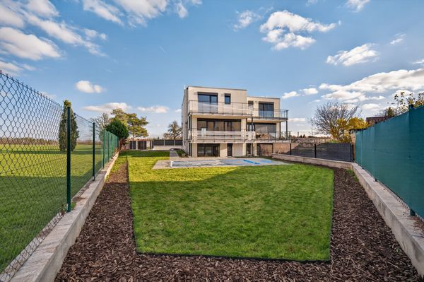
20. Zahrada
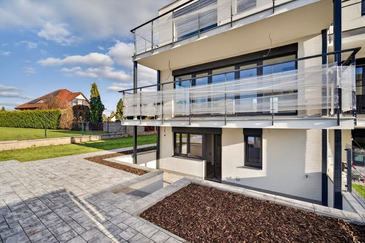
21. Terasa a zahrada
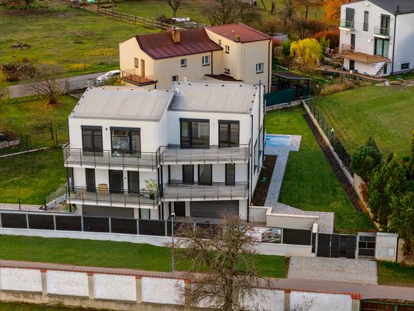
22. Dům zblízka z dronu
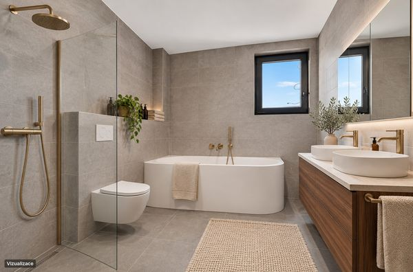
Vizualizace23. Koupelna v patře
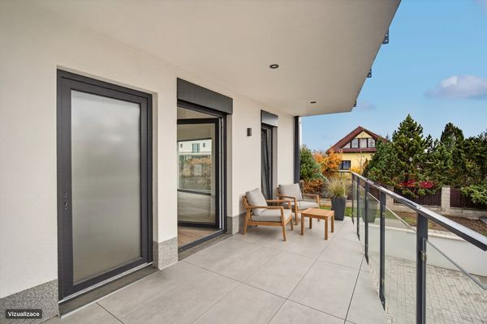
Vizualizace24. Terasa u obývacího prostoru
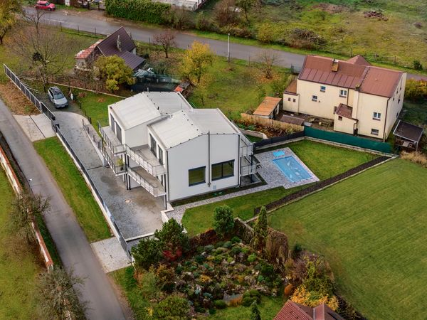
25. Dům a zahrada shora
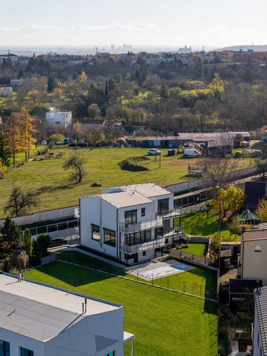
26. Dům a Praha z dronu
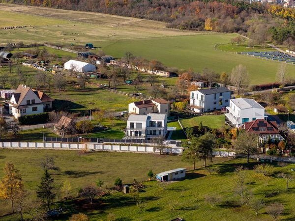
27. Dům v krajině
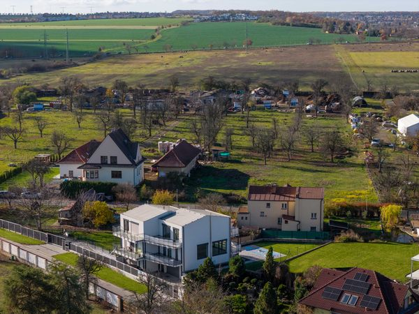
28. Dům a okolí z dronu
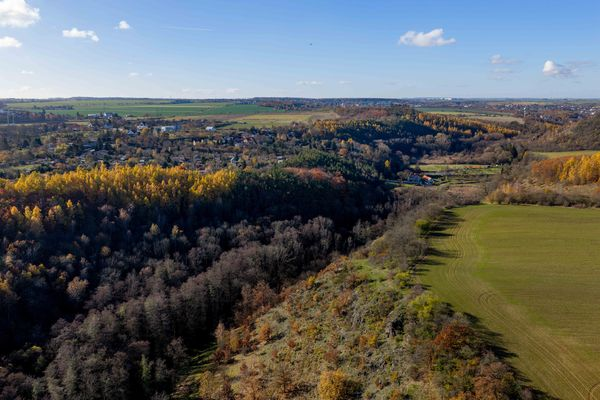
29. Příroda hned za domem
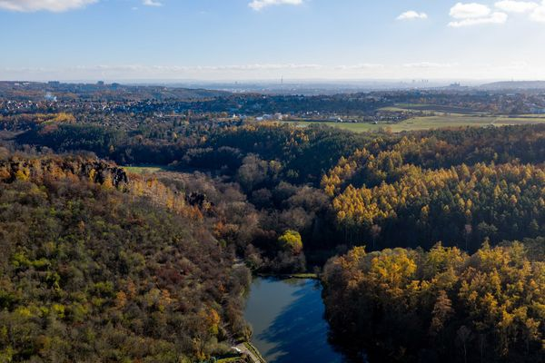
30. Údolí a krajina v okolí
Zobrazit ostatní fotky (do inzerátu je nedáváme)
Venku

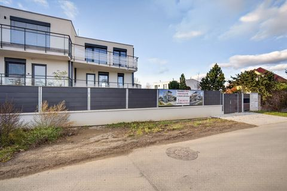
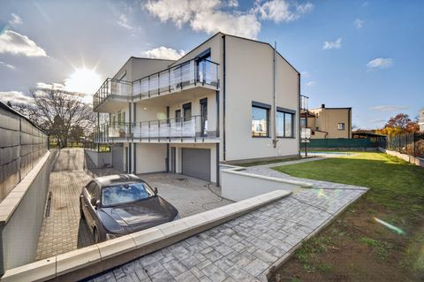
 upravená obloha
upravená obloha


 upravená obloha
upravená obloha
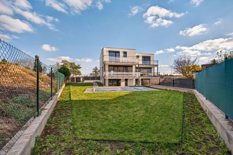


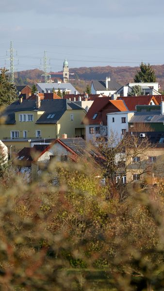

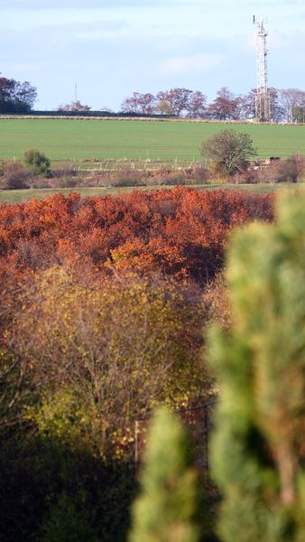


U fotek označených „upravená obloha“ (10. 11. bylo zataženo) jsme jen nahradili oblohu oblohou ze 14. 11. Dům ani okolí se neměnily.
1.PP – garáž a garsonka


1.NP – obývací prostor


U fotek označených „upravená obloha“ (10. 11. bylo zataženo) jsme jen nahradili oblohu oblohou ze 14. 11. Dům ani okolí se neměnily.
2.NP – pokoje


U fotek označených „upravená obloha“ (10. 11. bylo zataženo) jsme jen nahradili oblohu oblohou ze 14. 11. Dům ani okolí se neměnily.
Na obou fotkách balkonu jsme ze snímku jen vyretušovali odložený žebřík a drobný stavební nepořádek. Ochranná fólie na zábradlí je skutečný stav.
Z dronu
Upravené fotky z dronu, 10., 13. a 14. 11. 2026 – nejdřív pohledy od ulice.


Připomínky k fotkám (nepovinné)
Úkol 2
3D model domu
Co udělat: U každého listu klikněte Souhlasí, nebo Upravit.
Proč: Podle modelu vyrobíme animace do videa. Musí sedět se skutečným domem.
Otáčecí 3D model domu
3D model – rozměry z výkresů, některé údaje odhad
Otáčejte tažením, přibližte dvěma prsty nebo kolečkem.
Půdorysy, pohledy a řezy
Půdorys 1.PP
Nábytek podle Vašich výkresů.

Půdorys 1.NP
Nábytek podle Vašich výkresů.
Půdorys 2.NP
Nábytek podle Vašich výkresů.

Pohledy na fasády

Axonometrie se zahradou

Rozložená podlaží
Co je v ceně a co na přání
Takhle to ukážeme ve videu. Prosíme, zkontrolujte popisky.


Úkol 3
Ceny nadstandardů a upřesnění
Co udělat: Zkontrolujte, co jste doplnil, a pošlete to s ostatním.
Proč: Ať ve videu a na webu neuvedeme nic špatně.
Podzemní akumulační nádrž
Kde přesně pod domem je a jak je velká?
Garsonka
V podkladech je 13,7 m², z výkresu nám vychází menší. Která plocha platí?
Kamerový systém v ceně
Je to videotelefon u branky, nebo i kamery?
Ceny příplatků na přání
Takto ceny máme od Vás. Pokud je některá jinak, přepište ji.
Poslední krok
Odeslat
Co udělat: Klikněte dole na Odeslat.
Proč: Po schválení začneme dělat video.